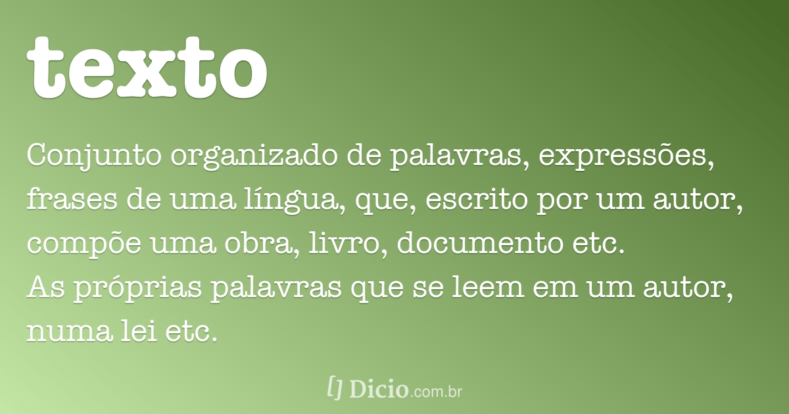

1 - Em artes gráficas, o texto é a matéria escrita, por oposição a toda a parte iconográfica (ilustrações e outros elementos). É a parte principal do livro, revista ou periódico, constituída por composição maciça, desprovida de títulos, subtítulos, epígrafes, fórmulas, tabelas, etc.
2 - Um texto pode ser codificado, sendo formado de acordo com um código determinado impeditivo da sua leitura direta.
3 - Um texto tem tamanho variável e deve ser escrito com coesão e coerência. Pode ser classificado como literário e não-literário.
4 - Os textos literários apresentam uma função estética. Geralmente são escritos em linguagem expressiva e poética, com o objetivo de atrair o interesse e emocionar o leitor. O autor segue um determinado estilo e usa as palavras de forma harmoniosa para expressar as suas ideias. Há uma predominância da função poética e da linguagem conotativa (subjetiva). São exemplos de textos literários: romances, poesias, contos, novelas, textos sagrados, etc.
5 -Os textos não-literários possuem função utilitária ao informar e explicar ao leitor de forma clara e objetiva. São textos informativos sem preocupação estética. Há uma predominância da função referencial e da linguagem denotativa (objetiva). São exemplos de textos não-literários: notícias e reportagens jornalísticas, textos científicos e didáticos, etc.
Voltar